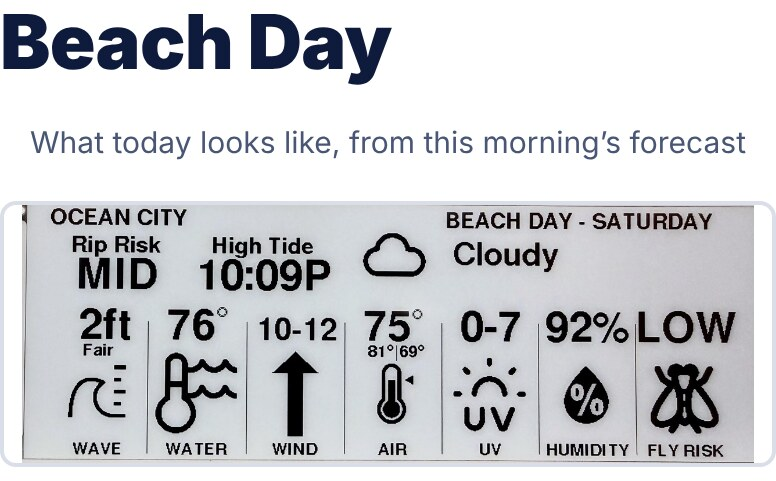

What tapping it opens
Every screen, right on your phone
Most of these are real screenshots of the actual page — swipe through them the same way on your own phone.
Tide & Conditions

Today's tide curve, water & air temp, wind, and sky — the first thing you see.
Default screenWaves & Wind

Wave height and period alongside wind speed and direction, today and tomorrow.
Surf checkRadar

A live rain radar centered on your beach, plus a two-day rain and temperature outlook.
Is it about to rainLive Beach Cam
For Ocean City, NJ keychains: a real live camera feed from the 14th Street Fishing Pier.
OCNJ only, for nowYour Custom Screens

Paired to a Wave Clock? Whatever you've designed for it — a countdown, a team schedule, Beach Buddy — shows up here too.
Linked keychains onlyBeach Day

Rip risk, high tide, wave and water conditions, wind, UV, humidity, and fly risk, all at a glance.
The whole checklistSong List
Paste any YouTube playlist or song and it plays right from your tide page — shuffled beach music, ready to go.
Opt-in, no clock neededLive Video Feed
Paste a link to any YouTube live stream — a webcam, a surf cam, anything — and it plays muted, right on this page.
Opt-in, no clock needed